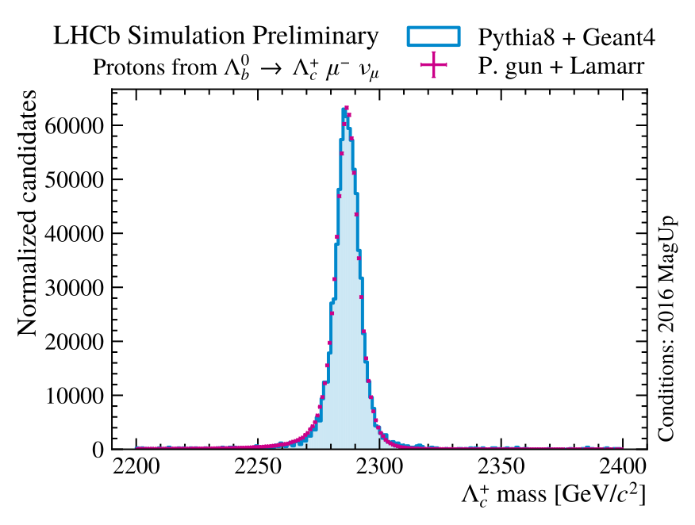
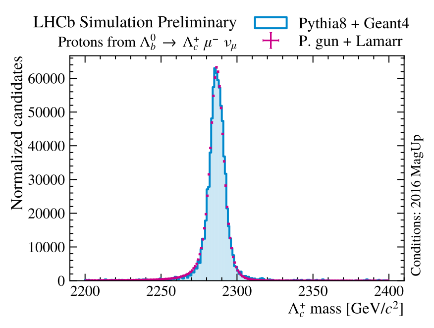

1. Motivation
bla bla bla
in 21st International Workshop on Advanced Computing and Analysis Techniques in Physics Research (ACAT 2022)
L. Anderlinia, M. Barbettia,b, G. Cortic, A. Davisd, D. Derkache, N. Kazeeve, A. Maevskiye, S. Mokhnenkoe, B. Siddif, Z. Xugbla bla bla
The new ultra-fast simulation framework for LHCb is named Lamarr and is embedded within the LHCb simulation framework Gauss. Lamarr consists of a pipeline of (AI-based) modular parameterizations designed to replace both the physics simulation and the reconstruction steps.
Efficiencies: Gradient Boosted Decision Trees (GBDT) trained on simulated data to predict the fraction of accepted / reconstructed / selected candidates [2].
High-level quantities: Conditional Generative Adversarial Nets (GAN) trained on either simulated or calibration data to synthetize the high-level response of LHCb sub-detectors [2].
Best-performing models can easily replace specific modules without recompiling the whole pipeline using the deployment tool scikinC [3].
scikinC translates AI-based parameterizations to be dynamically linked to the main application (Gauss). In this way, models can be developed and released independently.
Lamarr is currently under validation, comparing the distributions of the analysis-level reconstructed quantities parameterized with what obtained from detailed simulation for \(\Lambda_b^0 \to \Lambda_c^+ \mu^- X\) decays with \(\Lambda_c^+ \to p K^- \pi^+\) [4].
 

bla bla bla


bla bla bla


bla bla bla
bla bla bla